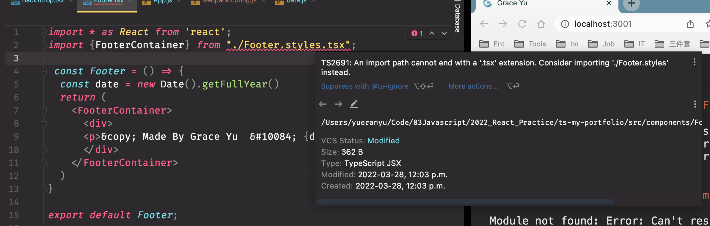
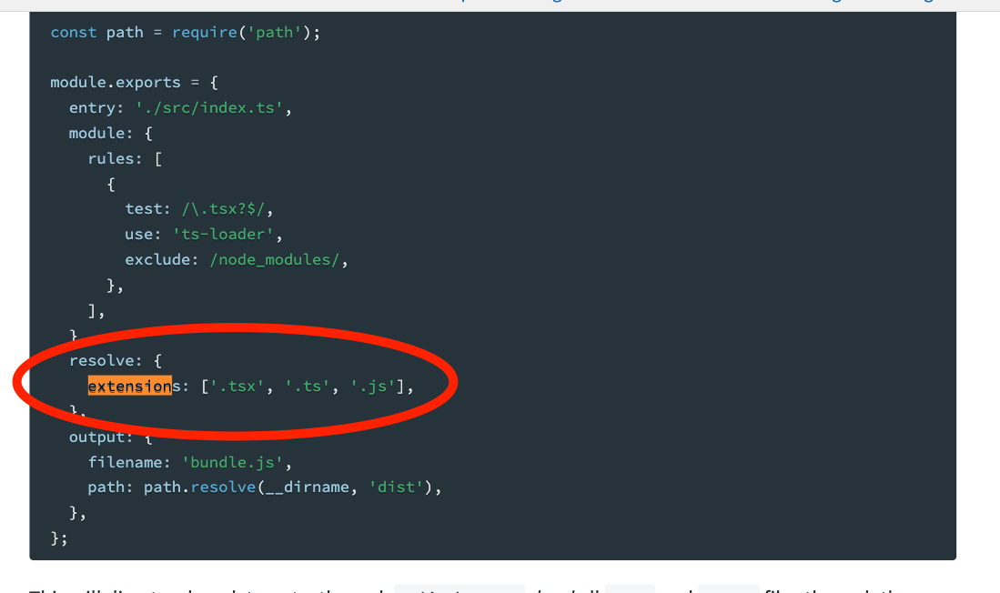
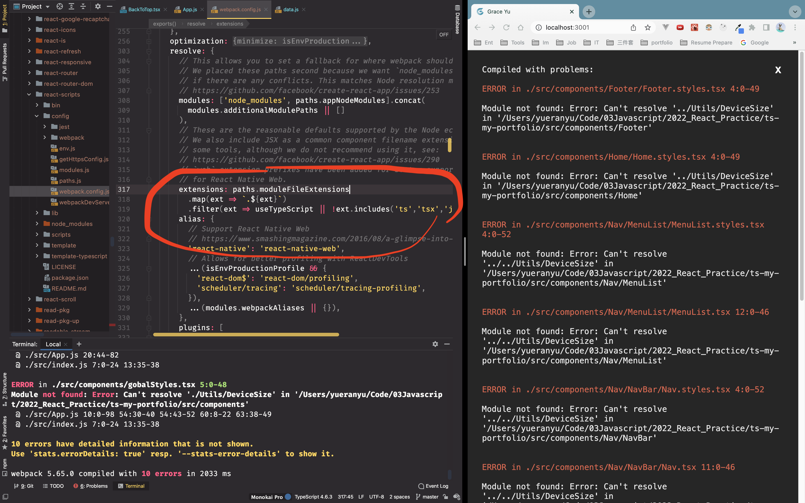
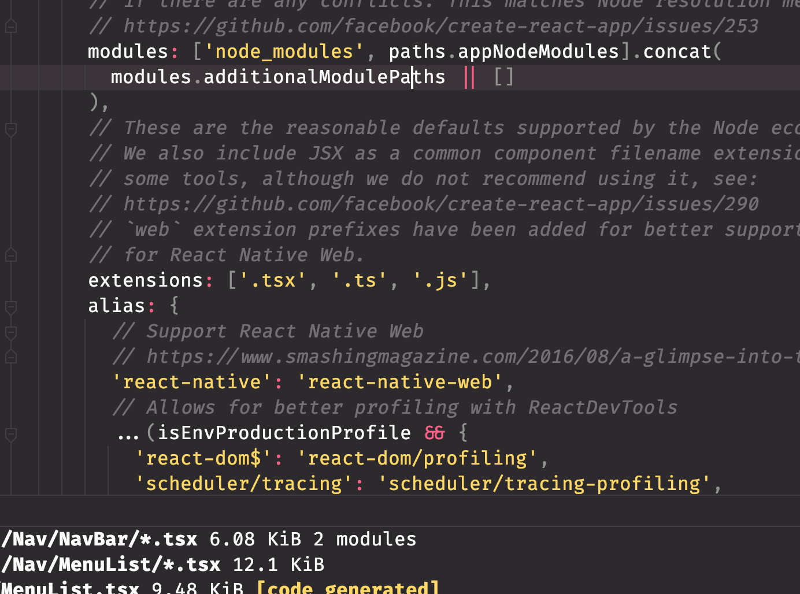
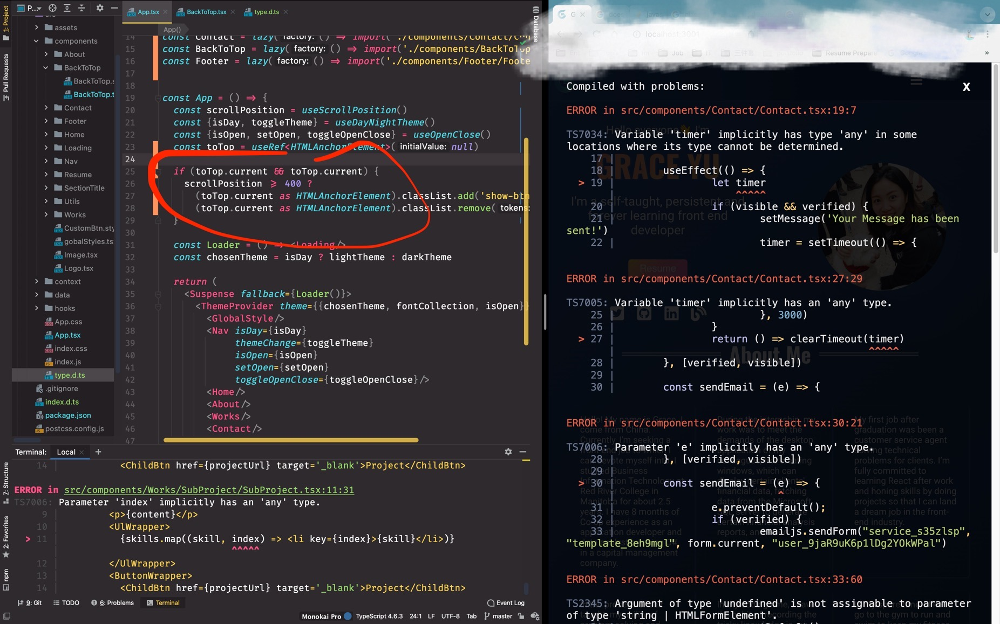
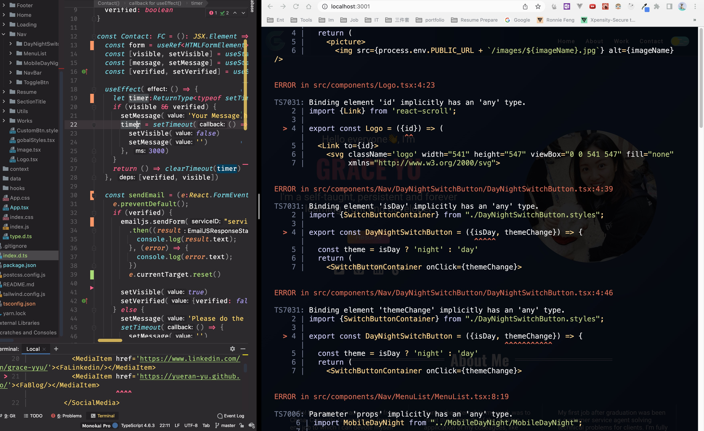
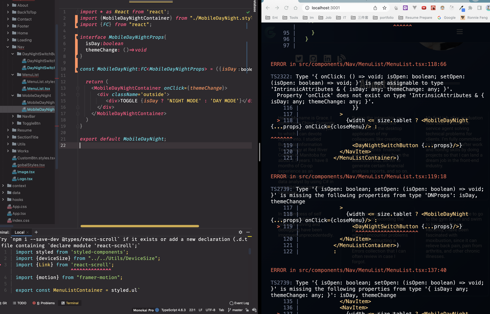

回忆从Javascript迁移到Typescript的修复bug的过程
.tsx extensions 的问题
首先在原有的React project上安装typescript的模板，运行
yarn add typescript @types/node @types/react @types/react-dom @types/jest. 因为不知道该怎么下手，所以搜索了一下油管的一些视频,像How to add Typescript to existing ReactJS project? Step by step tutorial. 看了一点点视频后发现视频的内容比较简单，而修改我自己的portfolio却是一个巨大的工程，所以我决定在这个视频的启发下开始自己动手改代码。 心里比较没底，所以一开始就从简单的components改。打开 components folder,从第一个 About 文件改起。
遇到的第一个问题是需要手动添加后缀名 .tsx 到import的语句里。  添加完后缀 .tsx 界面还是报错，如上图。所以要想办解决这个后缀的问题。 有人建议在 webpack.config.js 里添加一个 extension，（如下图所示）  但是 webpack.config.js 本来就有一个 比较复杂的 extensions，（如下图所示），一开始没想删除原extensions,但是后来实在一直跑不通，就把复杂的源代码删了，用官网提供的简单的 extensions代替，然后就奏效了。 所以，整个debug的过程就是不停的尝试，然后不行就换另一个方法，直到跑通。在这个过程中，需要联想到曾经学过的知识，那些知识能帮助纠正偏差，往正确的猜测和可能的结果上靠。   以上的截图就是最终结果。
.png 后缀的图片报错
搜索过的问题关键词有：Module not found: Error: Can’t resolve ‘assets/image.png 最后 stack overflow 上这个结果 【Webpack & Typescript image import 】让我找到了解决方案。 也是配置了 webpack.config.js, 我采用了 该贴的 【Setup Webpack file-loader, add declaration.d.ts, and voila!】这个答案。需要生成 tsconfig.json 文件。 具体方法如下：
- 安装 file-loader,
yarn add -D file-loader- 在 webpack.config.js 里 添加一个 rule
module: { rules: [ ..., { test: /\.(png|jpe?g|gif|jp2|webp)$/, loader: 'file-loader', options: { name: '[name].[ext]', }, }, ], },这里一开始我复制粘贴错了地方，导致代码运行，不正常，后来通过仔细对比，放对了地方。- 安装 tsconfig.js 然后复制一下代码到这个文件里：
{ "compilerOptions": { ..., "jsx": "react", "esModuleInterop": true, "target": "ES2020", "moduleResolution": "node" }, "exclude": ["node_modules", "**/*.spec.ts", "**/*.test.ts"], "include": ["src", "index.d.ts"] /// <-- Like this!! }注意一定要添加 “jsx”:”react” 这一句，因为一开始我忽略了改代码的上一半内容，导致后面每个文件都开始报错（Error when opening TSX file: Cannot use JSX unless ‘–jsx’ flag is provided）。 4.最后在 src folder 隔壁创建个 index.d.ts, 这个文件已经在第三步, “include”里添加了。然后我们可以再 index.d.ts文件里 引用 图片后缀.png 相关的 module
declare module '*.png'; declare module '*.jpg';这样 “.png” 等图片后缀报错的问题就解决了。
toTop - useRef() 断言

在 scrollToTop 这块代码上，使用 useRef，但是不知道用什么类型合适，最后搜到 HTMLAnchorElement这个类型，但是 current 还在继续报错，最后搜索stackoverflow得到的结果是使用断言(assertion), 改到这里的时候，我已经把 App.js 改成了 App.tsx了，所以很多时候把 App.tsx里的问题修复好，相关的components的报错自然就消失了。
报错：Could not find a declaration file for module ‘react-google-recaptcha’.
这个同样需要添加 module 到 index.d.ts 里去. 后面 react-scroll也是一样的。
declare module 'react-google-recaptcha'; declare module 'react-scroll';
给各种Provider 申明 interface 或者 type
因为使用了 context 所以，需要给 自定义的context的申明类型，然后在 createContext的时候初始化类型这个不难,具体例子如下：
import {FC, useState, createContext, useContext, useCallback, ReactNode} from 'react';
interface OpenCloseProps {
isOpen: boolean
setOpen: React.Dispatch<React.SetStateAction<boolean>>
toggleOpenClose: () => void
}
const OpenCloseContext = createContext<OpenCloseProps>({
isOpen: false,
setOpen: () => {},
toggleOpenClose: () => {}
})
export const OpenCloseProvider: FC<ReactNode> = ({children}) => {
const [isOpen, setOpen] = useState<boolean>(false)
const toggleOpenClose = useCallback(() => setOpen(!isOpen), [isOpen])
const OPObject = {isOpen, setOpen, toggleOpenClose}
return (
<OpenCloseContext.Provider value={OPObject}>
{children}
</OpenCloseContext.Provider>
)
}
之后，使用了styled-components, 里面有个ThemeProvider, 关于theme的类型, 首先需要在 src的隔壁创建一个 theme.d.ts，然后添加到 tsconfig.js。 如果 tsconfig.js 里没有 theme.d.ts,styled-components的 global.style.tsx 里就会不停报错，报错内容是 theme 的 DefaultTheme里面没有 chosenTheme等这些自定义类型，所以我们需要手动添加自定义 props到 DefaultTheme里去，申明如下:
import {NDThemeProps,FontProps } from "./src/components/gobalStyles";
declare module "styled-components" {
export interface DefaultTheme {
chosenTheme: NDThemeProps
fontCollection:FontProps
isOpen:boolean
}
}
嵌套的component,或者叫 子类components的类型申明
在 Nav 这个components里有很多嵌套的components, 比如 MenuList.tsx，父类components的类型一定要被子类components的类型完全继承，一定要检查不能有遗漏。 还有 不能有重复的prop出现在，比如我父级component Nav的 interface已经有一个setOpen prop 了，子级component MenuList 在有<…props>的情况下又 又写了一个 setOpen={setOpen}, 最后通过仔细检查父类和子类的 类型才知道 我写重复了。报错信息： 【TS2783: ‘setOpen’ is specified more than once, so this usage will be overwritten.】 之前没有 typescript 的时候 没有关于重复的任何报错，typescript会发现像 prop引用重复这类问题。
以下是两张报错示例截图，作为复习参考吧

